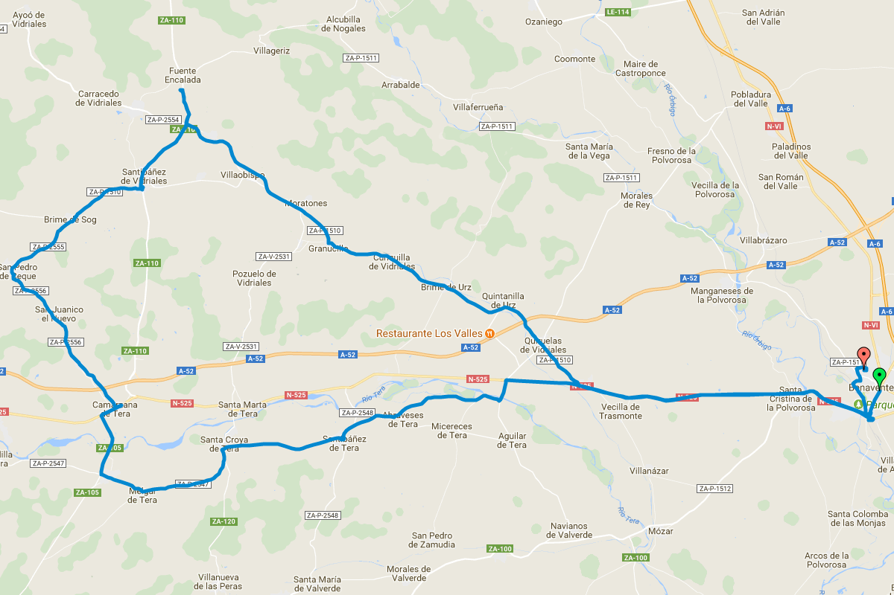
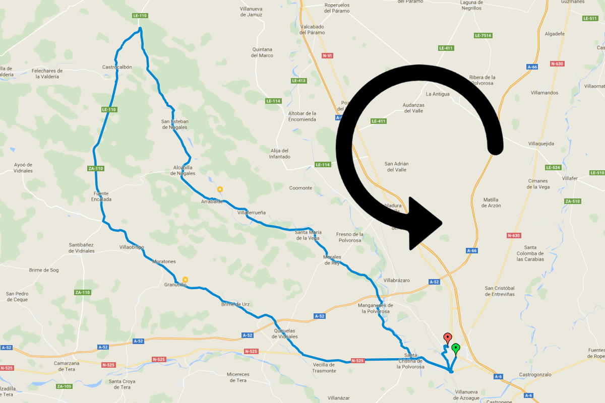

Actualizado a 14 Noviembre, 2017
Rutas del club
Esta es una lista de las rutas realizadas de manera regular por el club.
Las salidas se hacen con salida de Benavente a las 10:00 todos los festivos y domingos del año.
Haciendo click sobre el título de la ruta se muestra un video con el recorrido y perfil de la misma

Benavente - Abraveses - Santibañez de Tera - Melgar de Tera - Camarzana - San Pedro de Ceque - Santibañez de Vidriales - Villaobispo - Brime de Urz - Quiruelas de Vidiriales - Colinas de Trasmonte - Santa Cristina de la Polvorosa

Benavente - Manganeses de la Polvorosa - Santa Maria de la Vega - Arrabalde - Alcubilla de Nogales - Castrobalbon - Fuente Encalada - Villaobispo - Granucillo - Brime de Uz - Quiruelas de Vidriales - Colinas de Trasmonte - Santa Cristina de la Polvorosa